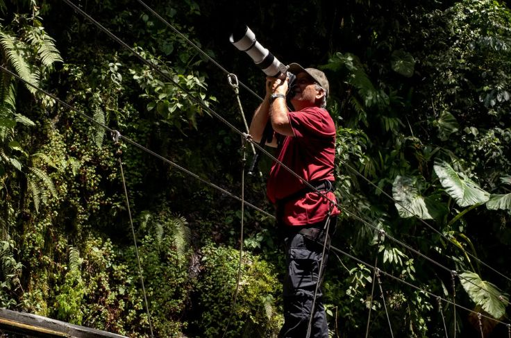

Durante más de cinco décadas de conflicto armado interno, vastas extensiones de las selvas y montañas colombianas permanecieron completamente vedadas para el mundo. Los científicos y turistas no podían acceder a estas joyas ecológicas debido a la compleja situación de seguridad en las zonas rurales. Sin embargo, la firma del acuerdo de paz en 2016 entre el gobierno y las FARC cambió radicalmente el destino de la población y el territorio.
Un efecto secundario y transformador de este proceso de pacificación ha sido el veloz florecimiento del ecoturismo comunitario. Antiguos cazadores locales, campesinos y excombatientes que antes operaban en la clandestinidad de las densas selvas han cambiado las armas por completas guías de aves de campo y binoculares de alta resolución para recibir viajeros.
El impacto económico de un ave viva
Hoy en día, son estas mismas comunidades organizadas las que custodian los senderos ecológicos, convirtiéndose en los principales protectores de ecosistemas que antes estaban amenazados por la deforestación o la caza ilegal. Biólogos locales coinciden en que la estabilidad en el campo no solo ha salvado vidas, sino que ha abierto una puerta masiva para el desarrollo científico.

El aviturismo se ha establecido así como una alternativa de economía sostenible real para el desarrollo de la población rural. Los ingresos económicos generados por los visitantes extranjeros —que gastan un promedio de 400 dólares diarios en hospedajes y guías locales— van directamente a las familias, demostrando que un ave viva en su entorno genera mucha más riqueza y bienestar que las actividades extractivas.